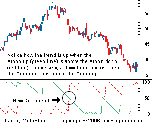

A technical indicator used for identifying trends in an underlying security and the likelihood that the trends will reverse. It is made up of two lines: one line is called "Aroon up", which measures the strength of the uptrend, and the other line is called "Aroon down", which measures the downtrend. The indicator reports the time it is taking for the price to reach, from a starting point, the highest and lowest points over a given time period, each reported as a percentage of total time.
The Aroon indicator was developed by Tushar Chande in 1995. Both the Aroon up and the Aroon down fluctuate between zero and 100, with values close to 100 indicating a strong trend, and zero indicating a weak trend. The lower the Aroon up, the weaker the uptrend and the stronger the downtrend, and vice versa. The main assumption underlying this indicator is that a stock's price will close at record highs in an uptrend, and record lows in a downtrend.
This indicator is very similar to the directional movement index (DMI) that was developed by Welles Wilder, which is also a very popular indicator used to measure the strength of a given trend.
{kind=link}